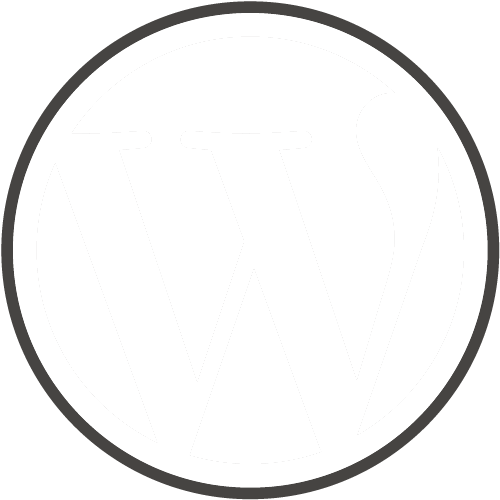
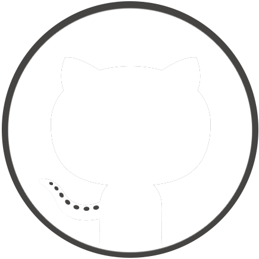
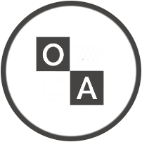

Kyle Riemensnider's
Needmore Application
KR
Needmore Application
When I perused the "About" page on the Needmore Designs website I got a sense of familiarity and thought instantly, "Wow, these are my people!" I would love to join this team as there is a definite commonality in the visual and the design direction between myself and Needmore Designs. It was actually the font of “Needmore Designs,” that drew me in, and has lead me to believe that this is the place where I can respectively contribute and collectively create, while continuing to develop and hone the craft as a Front-End developer a.k.a The Digital Jedi. I also feel I would get along great with the team as I share a lot of the same down time interests; the great outdoors, the ocean, traveling, reading, Japan, Japan, Japan – Cooking is my wife’s thing, so I would have to put Eating in place of Cooking. Quite honestly, it just looks like a fun place to design and create. I can’t call it work because this is my passion. Why is it my passion, you ask? I am a Gemini, so there fore I have two sides to feed. Design takes care of one side’s hunger, Development takes care of the other’s, so how can I not be passionate about something that both fuels my fire and feeds that drive to create and contribute to something great! I have one side that is very creative, curious, and the want to express thoughts and actions. There are so many parts to the web that one can accomplish these expressions: typography, color, layout, hero images, geometric shapes, symmetry, and photo journalism. It is a platform for all walks of art and freedoms. Add Truth and Beauty, and now we’ve got bohemian realism. The second side of me is the analytical. This is where Code comes into play. This is where the magic happens. Writing code to me is like building something with my hands, as Gemini’s are ruled by their hands. I was that kid who got down and dirty on the playground, so getting down and dirty with Code is my own grown up version of that most beloved past time of my youth. With Code I get to decipher, analyze, deploy (I just love that word), functionality, logic, semantics, and mathematics. The Web is my canvas, Code is my paintbrush, and we arrive full circle at the corner of UX and UI. The Web is doing nothing but expanding, and I want to grow with it. To sum this all up, whenever I develop and design a project, I feel like a kid in, not just some non-descript candy store, nay, I am in the Willy Wonka Chocolate Factory. You know the one with the Oompa-Loompa’s… And they’re singing that song (From the original 1971 version, mind you). Ahhh, candy, candy everywhere! HTML5, CSS3, Angularjs, nodejs, jQuery, php, Wordpress, Drupal, frameworks, PSD, mock-ups, and I can go on and on. [Cue: Kyle dancing through a High-Def field in the Code universe and twirling around an icon laden, tech-y, LED cane-type-thing]
In conclusion, please do not come to the conclusion [heh, heh] that I am some arrogant hot shot that thinks that I am perfect, and that my code is perfect. Simply put, I am just passionate about Web Design. I am very conscious of the fact that I have A LOT to learn and have remained open, and will continue to remain open to all different types of instruction, direction and constructive criticism for pretty much the rest of my life. Besides, my wife will always keep me, and my two sides, in check. The thing is I love learning, and how can you learn if One, you do not pay your dues, and Two, you close yourself off to any growth opportunities by stating, “I am perfect.” “I am better than everyone.” >Foolishness< I am so grateful to learn, and will certainly be ecstatic to receive direction from a senior developer. One who had paid their dues, and has been gracious enough to impart this great and invaluable wisdom upon me. And hey, if it’s at Needmore Designs – That is the ideal.
1

add_image_size(); is my favorite WordPress function because currently I'm dealing with a client that is anything but tech savvy. Building a site that is image heavy, in which, there will be portions of the site that have different sizes of the same image is the perfect senerio for this function. If I were to attempt to explain how to load in different image sizes, there wouldn't be any mutual understanding from the client. Not only is add_image_size(); great because its ease of use it also helps speed performance. Imagine if you have a brobdingnagian image that doesn't need to be nearly that big. With add_image_size(); WordPress takes an optimized size and loads that version. I have seen it save upwards of 8 seconds on load time with Wifi.
2

 Starting a branch is a fantastic way to implement new features or bug fixes. By starting a new branch before pushing live, it will allow you to develop your code, test and make any other changes needed all without altering production code until you know it works.
Another great time to start a branch is when you need multiple people working on the same section of a project. By creating a branch for each person, they can work on their part and push the code together when finished. If there are conflicts with the code version control will tell you what the problems are and let you make a decision before merging everything together. This is better than using an FTP because FTP will just overwrite the code with the latest push, and potentially you will lose what the other person has been working on.
Third you can test your project on different platforms to make sure it works. Lets say you have three different versions of WordPress, 2.6, 3.0 and 3.5 that you know some of your clients are using. You need a place to test a new plugin that you are writing to see if it will work on all of them because we know that some clients will never do an update. Three different branches can be created for each version of WordPress so you can test your plugin to make sure it works on all of them.
3
vs
The benefits of using CSS over JavaScript for animations is because CSS is processed much faster inside the browser. Especially if there are multiple animations running at the same time.. The browser has to go through every line on code for every animation every time with Javascript. CSS is easier to read and understand in the browser because JavaScript is an interpreted language.. Also if the user has JavaScript turned off the animations will never run.
4

My favorite site that I have done so far is the OWCA site. It is currently hosted on my portfolio site here. Their current site can be found at www.oregonwca.org. I believe that you will agree it needed to be changed. I choose this one because it has been the best learning experience that I have had in all aspects. It gave me the ability to get true client interaction, a practical reason to learn the in's and out's of WordPress and experience working with a team (my partner was Kay who was the lead desinger on the project). My favorite part of the project is the fact that it will be my first site that is going to go live. Below is the mockups of the site during preproduction. The client preferred Kay's design overall but liked my idea of having more color. I did 90% of the WordPress build. It uses Foundation 4, Cycle 2 custom slider, I created a custom_post_type for the gallery and bio pages. The whole site uses the fantastic Advanced Custom Fields plugin.
5
For the site critique I chose Salt Fire and Time. I surfed around the site for about a half an hour before I could really see anything wrong. At the half hour mark I found the social link buttons in the bottom left corner. The problem is that it took me a half an hour to notice them. So I looked at them on every page. When the background is the lettuce, the twitter icon gets washed out. Sitting down at the bottom does not make it an obvious call to action. I would put them inline with the secondary menu at the top on the left side next to donations or on the main menu on the right next to contact. It would be very noticeable. Because humans are creatures of habit you would want to put certain thing where people will look for them. Social Icons are usually in the header or the footer. The only other thing that I could really find wrong with the site is the load time of the images. For example the picture of Tressa Yellig on the Our Story page is a 1000px by 1500px that is in a container that never gets bigger than 350px by 517px. Since the site is in WordPress I would use the add_image_function('favorite right now');. Then it would load a smaller and more optimized size, so that the User would not be waiting upwards of 30 seconds, that is the time that it took to load on my 3G iPhone.
{kind=link}
{kind=link}
{kind=link}